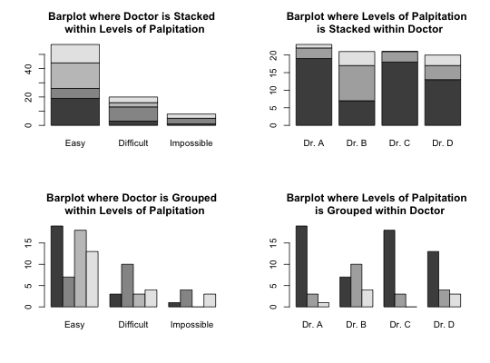

Initial results from a study to determine whether the traditional sitting position or the hamstring stretch position is superior for administering epidural anesthesia to pregnant women in labor as measured by the number of obstructive (needle to bone) contacts (OC)
A data frame with 85 observations on the following 7 variables:
Dr. A,
Dr. B, Dr. C, and Dr. DDifficult, Easy, and Impossible
indicating the physician's assessment of how well bone landmarks can be felt
in the patientHamstring Stretch and Traditional SittingFailure - person got
dizzy, Failure - too many OCs, None, Paresthesia, and
Wet TapUgarte, M. D., Militino, A. F., and Arnholt, A. T. (2008) Probability and Statistics with R. Chapman & Hall/CRC.
EPIDURAL$Teasy <- factor(EPIDURAL$Ease, levels = c("Easy", "Difficult", "Impossible")) X <- table(EPIDURAL$Doctor, EPIDURAL$Teasy) X#> #> Easy Difficult Impossible #> Dr. A 19 3 1 #> Dr. B 7 10 4 #> Dr. C 18 3 0 #> Dr. D 13 4 3 #>par(mfrow = c(2, 2)) # Figure 2.12 barplot(X, main = "Barplot where Doctor is Stacked \n within Levels of Palpitation") barplot(t(X), main = "Barplot where Levels of Palpitation \n is Stacked within Doctor") barplot(X, beside = TRUE, main = "Barplot where Doctor is Grouped \n within Levels of Palpitation") barplot(t(X), beside = TRUE, main = "Barplot where Levels of Palpitation \n is Grouped within Doctor")par(mfrow = c(1, 1)) rm(X)